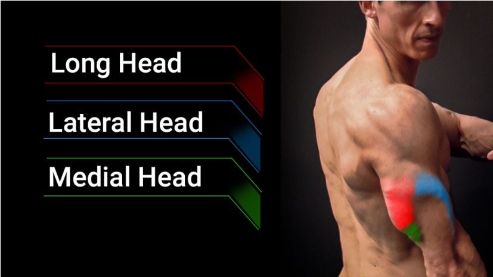

Triceps Exercises
Certainly! Here are some exercises and variations that target each part of
the triceps:

1. Long Head of the Triceps
Exercise: Overhead Triceps Extension
Variation 1: Dumbbell Overhead Triceps Extension

- Stand or sit with a dumbbell held overhead.
-
Lower the dumbbell behind your head and then extend your arms back up.
Variation 2: EZ-Bar Overhead Triceps Extension

- Use an EZ-bar instead of a dumbbell.
- This can reduce wrist strain and allow for heavier loads.
Variation 3: Cable Overhead Triceps Extension

- Use a rope attachment on a high pulley.
- Perform the extension while facing away from the machine.
2. Lateral Head of the Triceps
Exercise: Triceps Pushdown
Variation 1: Straight-Bar Pushdown

- Use a straight bar attachment on a high pulley.
-
Keep elbows close to your sides and push the bar down until your arms
are fully extended.
Variation 2: Rope Pushdown

- Use a rope attachment instead of a straight bar.
-
At the bottom of the movement, separate the ends of the rope for a
greater squeeze.
Variation 3: V-Bar Pushdown

- Use a V-bar attachment.
-
This variation allows for a more comfortable grip and can engage the
lateral head more effectively.
Exercise: Close-Grip Bench Press
Variation 1: Traditional Close-Grip Bench Press

- Use a narrower than shoulder-width grip on a barbell.
- Lower the bar to your chest and press it back up.
Variation 2: Smith Machine Close-Grip Bench Press

- Use a Smith machine for added stability.
-
This variation allows for a controlled movement and focuses on the
medial head.
Variation 3: Dumbbell Close-Grip Bench Press

- Use two dumbbells held together with palms facing each other.
-
Press the dumbbells up and together, keeping them close throughout the
movement.
4. Overall Triceps Development
Exercise: Triceps Dips
Variation 1: Bench Dips

- Use a bench or a sturdy surface behind you.
-
Lower your body by bending your elbows and push back up to the starting
position.
Variation 2: Parallel Bar Dips

- Use parallel bars.
- Lean slightly forward to engage the triceps more effectively.
Variation 3: Weighted Dips

-
Add weight using a dip belt or by holding a dumbbell between your legs.
-
This increases the resistance and promotes greater triceps growth.
Incorporating these exercises and their variations into your triceps
workout routine can help ensure you effectively target the long, lateral,
and medial heads of the triceps for balanced development.